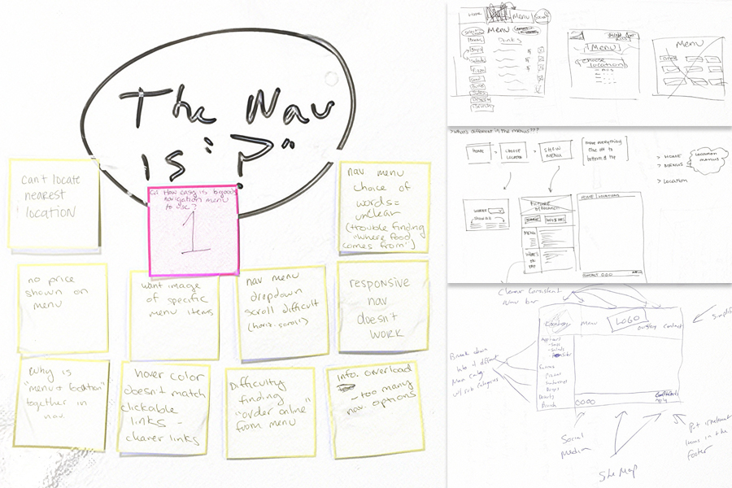

Tavern in the Square is a bar and restaurant with locations throughout Boston and Cambridge. Each location features different drinks and food. Because of this varying menu, the Tavern in the Square website faces navigation issues.
Evaluate the usability of the Tavern in the Square website, especially the navigation bar and the "Menu" navigation item.
Main Page
Menu Page
The current website has various navigation issues due to the varying menus. These issues were investigated through three usability studies. In the main page, the navigation bar had many options and was spread out across the top and the bottom of the main page. The menu pages featured main broken images, were very text-heavy, and had no prices featured.
Using the notes gathered from the three usability studies, various options were suggested for the website redesign of the menu page to accommodate the difference in menus across locations.
These options were then combined into one finalized option and mocked up in Balsamiq.
Finalized Sketch
Finalized Balsamiq Wireframe
The finalized option allowed for the browser to auto-detect and display the nearest location when a user clicked on the Menu option in the navigation bar. If the user was not interested in this particular location, they could click on the "Change Location" button underneath to be brought to the Locations page.
The top navigation bar was cleaned up to have four main options - Locations, Menus, Our Story, and Contact. The social media links were dislayed underneath the main logo.
Secondary navigation items (such as the "Apply" and "Gift Card") were moved to the bottom footer.
The menu page added in pictures and prices and broke the menu into five categories. This allows for the user to click into the menu they are interested in and breaks up the text.
The drink category is featured, as Tavern in the Square is known for its bar offerings and its draft selection.
{kind=link}
{kind=link}